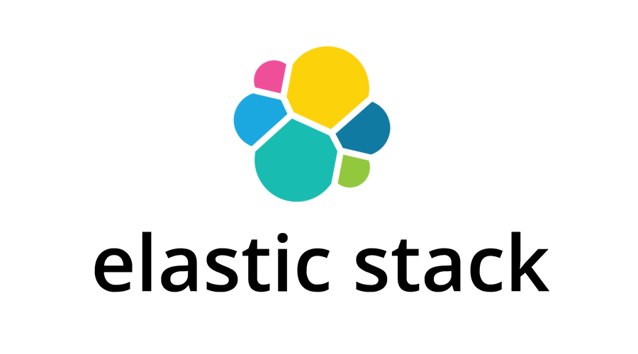
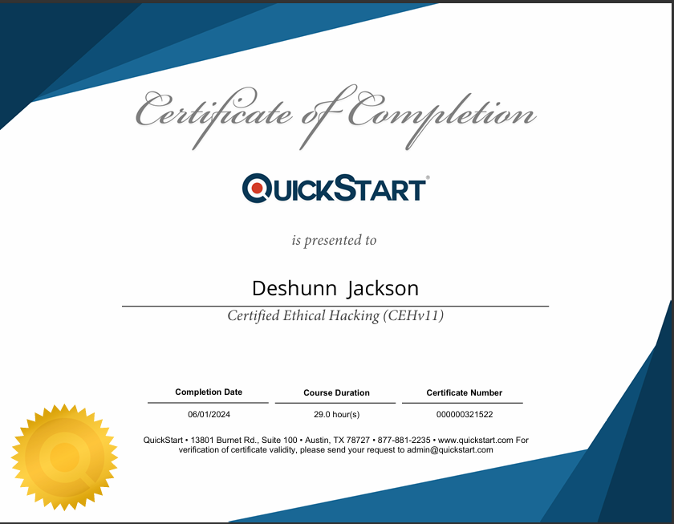
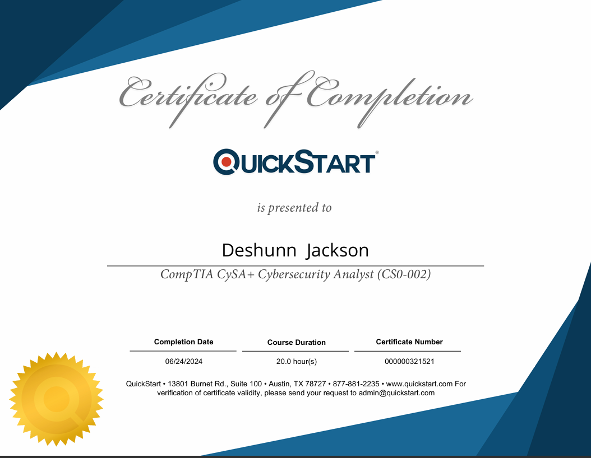
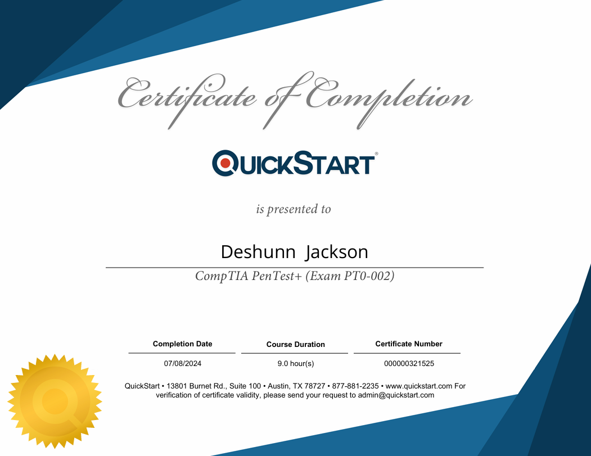
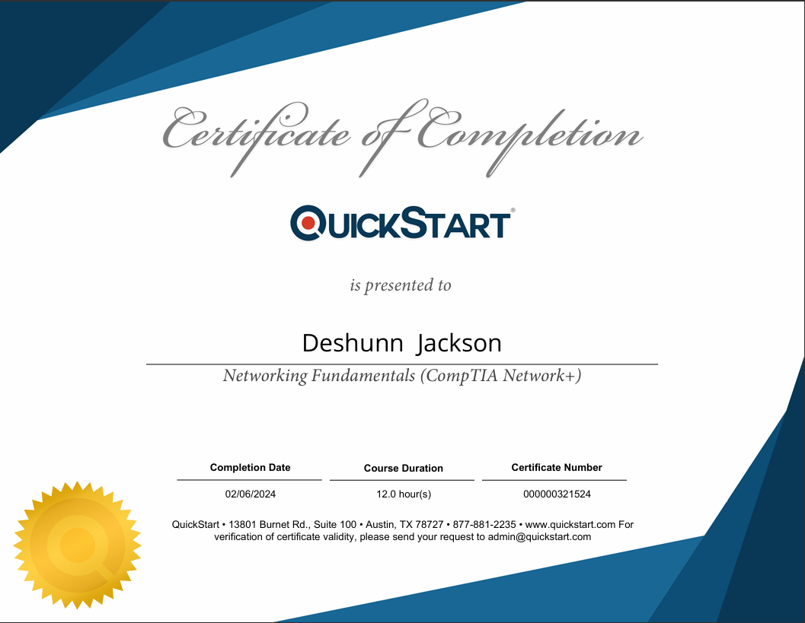
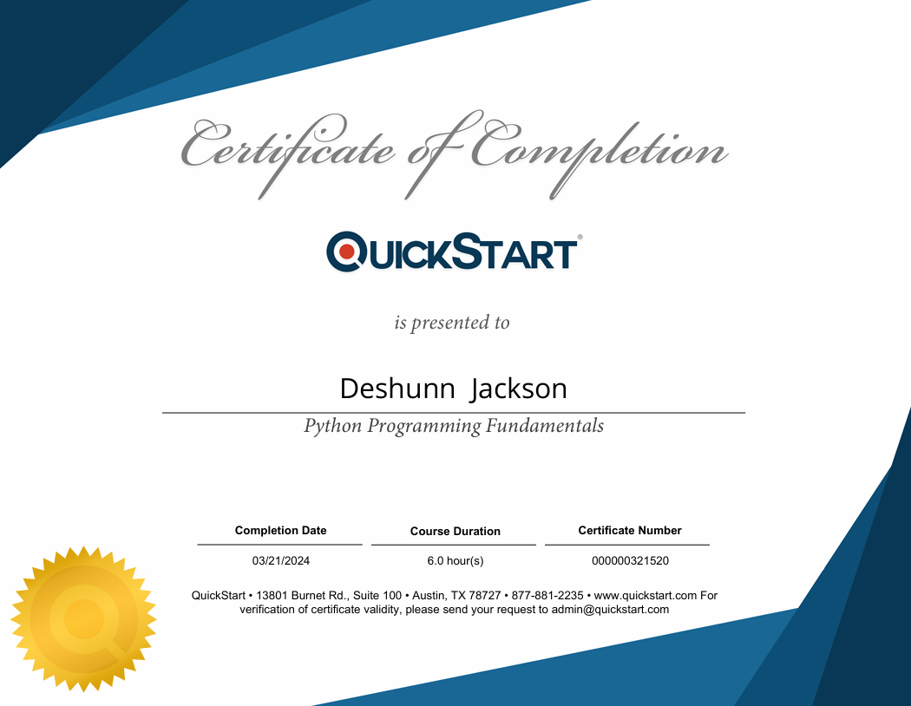
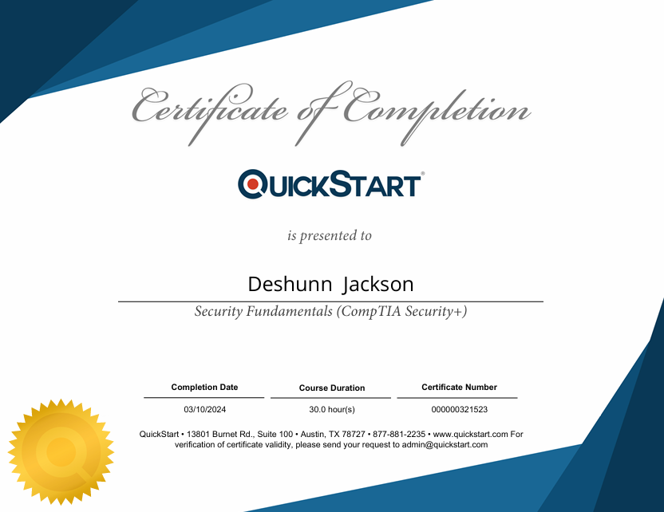

About Me
I am a driven candidate as a SOC Analyst with a profound commitment to protecting digital environments and combating cyber threats. Currently pursuing my BBA in Management Information Systems at the University of Houston (graduating Spring 2027), I bring a robust foundation in cybersecurity, validated by certifications including CompTIA CySA+, PenTest+, and CEH.
My passion for hands-on defense is demonstrated through my self-built, isolated SOC Home Lab. This multi-node environment (featuring pfSense, a FLARE-VM with Splunk Enterprise, Sysmon, and FakeNet-NG, alongside an Ubuntu Desktop for Volatility 3, Wireshark, DNS Intercepter, Ncat, and Oledump) is where I actively refine my skills in:
- SIEM Monitoring & Alert Triage (Splunk SPL, Dashboards)
- Threat Hunting & Malware Analysis (Static, Dynamic, Memory Forensics, MITRE ATT&CK)
- Detection Engineering & Incident Reporting (Root Cause Analysis)
- Linux CLI for intermidate forensics
Technical Projects & Labs
SOC Home Lab: Multi-Node Malware Analysis & Detection Platform
- Architected and deployed an isolated virtual SOC environment (pfSense firewall, Windows FLARE-VM, Ubuntu Desktop/Forensics workstation).
- Configured Splunk Enterprise on FLARE-VM for real-time ingestion and analysis of Sysmon host telemetry and FakeNet-NG network interception logs.
- Performed Static/Dynamic malware analysis on various samples (e.g., SillyPuTTY, Emotet), identifying HBIs (process injection, persistence via registry/scheduled tasks) and NBIs (C2 callbacks on non-standard ports).
- Developed custom Splunk SPL queries and alerts to detect specific malware behaviors, mapping findings to the MITRE ATT&CK Framework.
- Conducted memory forensics using Volatility 3 on infected VMs to uncover hidden processes, network connections, and in-memory strings.
- Documented comprehensive Incident Reports detailing attack chains, and IOCs
Blue Team Labs Online (BTLO) Investigations
- Executed multiple "Easy" and "Medium" difficulty SOC investigations, simulating real-world alert triage scenarios.
- Utilized industry-standard tools (Wireshark, Splunk, Event Viewer, Linux CLI) to analyze provided artifacts (PCAPs, web logs, event logs).
- Practiced incident response procedures, including log correlation, threat actor identification, and root cause analysis.
SOC Path Write-Ups

Elastic Stack Intro: Analyzing Network Traffic

WireShark Intro:Network Traffic Analysis
Windows Event Viewer: Security, Systems, Application & Hardware Events
Linux/Unix: Monitoring, Investigating, and Responding to security threats
SOC L1 Challenges
Certificates

SOC L1: Learning Path
{kind=link}

CEHv11
{kind=link}

CompTIA CySA+

CompTIA Pen Test+
{kind=link}
CompTIA A+

CompTIA Network+
{kind=link}

Python Programming Fundamentals
{kind=link}

CompTIA Security+
Overview
This platform serves as a live record of my professional growth and technical contributions within cybersecurity. I am committed to continuous learning and regularly update these resources with new certifications and detailed technical write-ups, particularly through my active 90-Day SOC Analyst Sprint. I am actively seeking a Junior SOC Analyst position where I can apply my proficiency in SIEM alert triage, threat hunting (leveraging MITRE ATT&CK), and malware analysis (Static, Dynamic, and Memory Forensics) to protect organizational assets. My hands-on experience developing and defending my SOC Home Lab demonstrates my dedication to evolving as a cybersecurity professional.